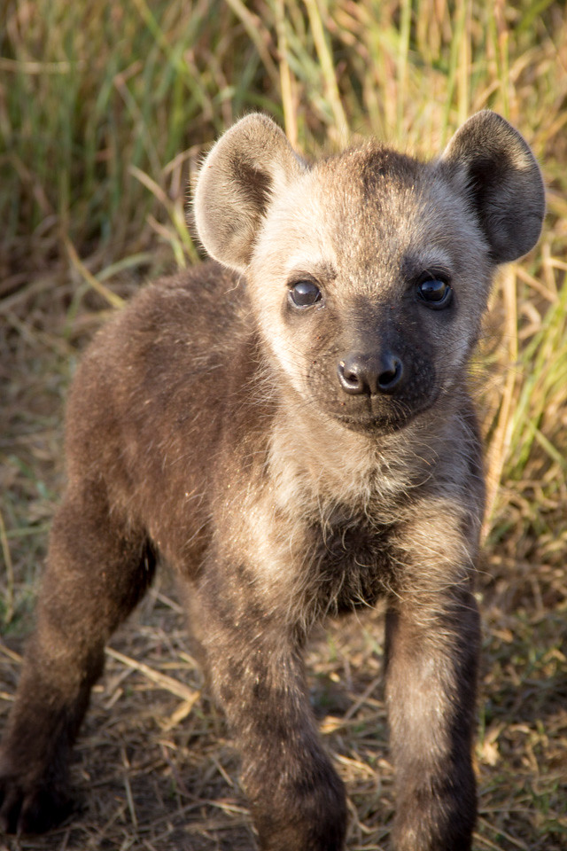

Mind-controlling parasite makes hyena cubs more reckless around lions
A feature on the study by Zach Laubach, Kay Holekamp, and colleagues showing that hyena cubs infected with the parasite Toxoplasma gondii get dangerously close to lions and are about four times more likely to be killed than uninfected cubs.
Read the article →